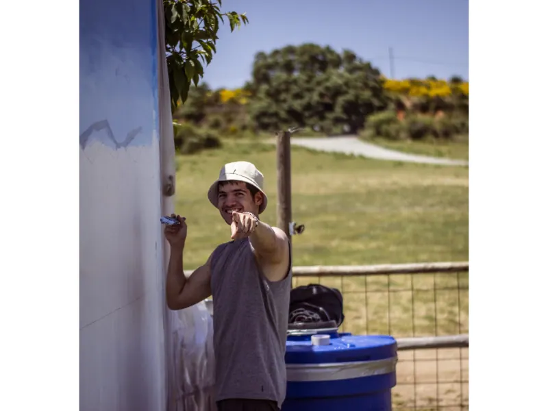

En transporte público
Desde Madrid, toma el tren hasta la estación Herradón–La Cañada.

Contacto
Visitas, voluntariado, apadrinamientos, donaciones o colaboraciones: escríbenos y te orientaremos.
Estamos cerca de La Cañada
El Santuario se encuentra en la carretera AV-P 307, km 1,5, cerca de La Cañada (Ávila).
Desde Madrid, toma el tren hasta la estación Herradón–La Cañada.
Carretera AV-P 307, km 1,5. Confirma la visita antes de desplazarte.
Pregunta por el grupo de WhatsApp de voluntarios para coordinar plazas.